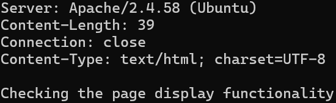
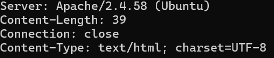
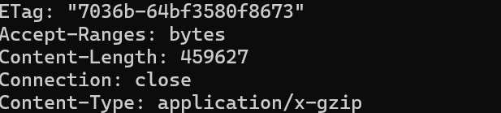

1. Получить главную страницу методом GET в протоколе HTTP 1.0

Рис 1. Результат
2. Получить внутреннюю страницу методом GET в протоколе HTTP 1.1

Рис 2. Результат
3. Определить размер файла file.tar.gz, не скачивая его

Рис 3. Результат
4. Определить медиатип ресурса /image.png

Рис 4. Результат
6. Получить первые 100 байт файла /file.tar.gz

Рис 6. Результат
7. Определить кодировку ресурса /index.php

Рис 7. Результат